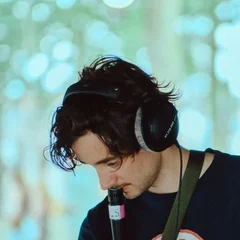
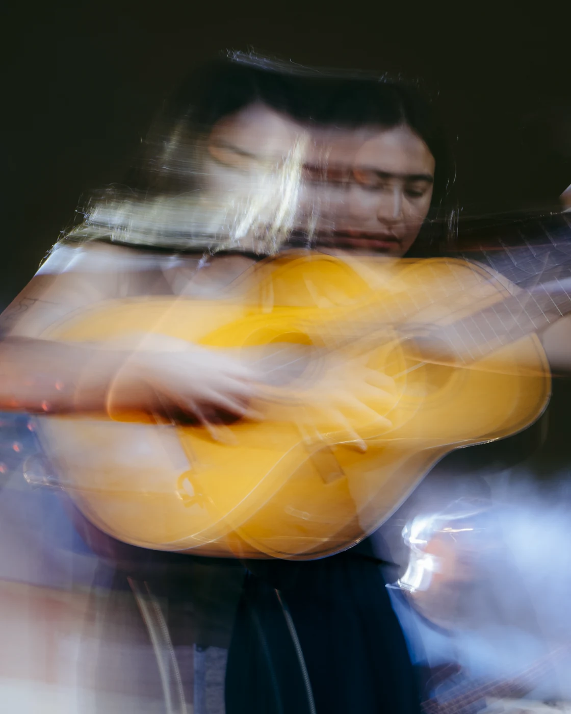
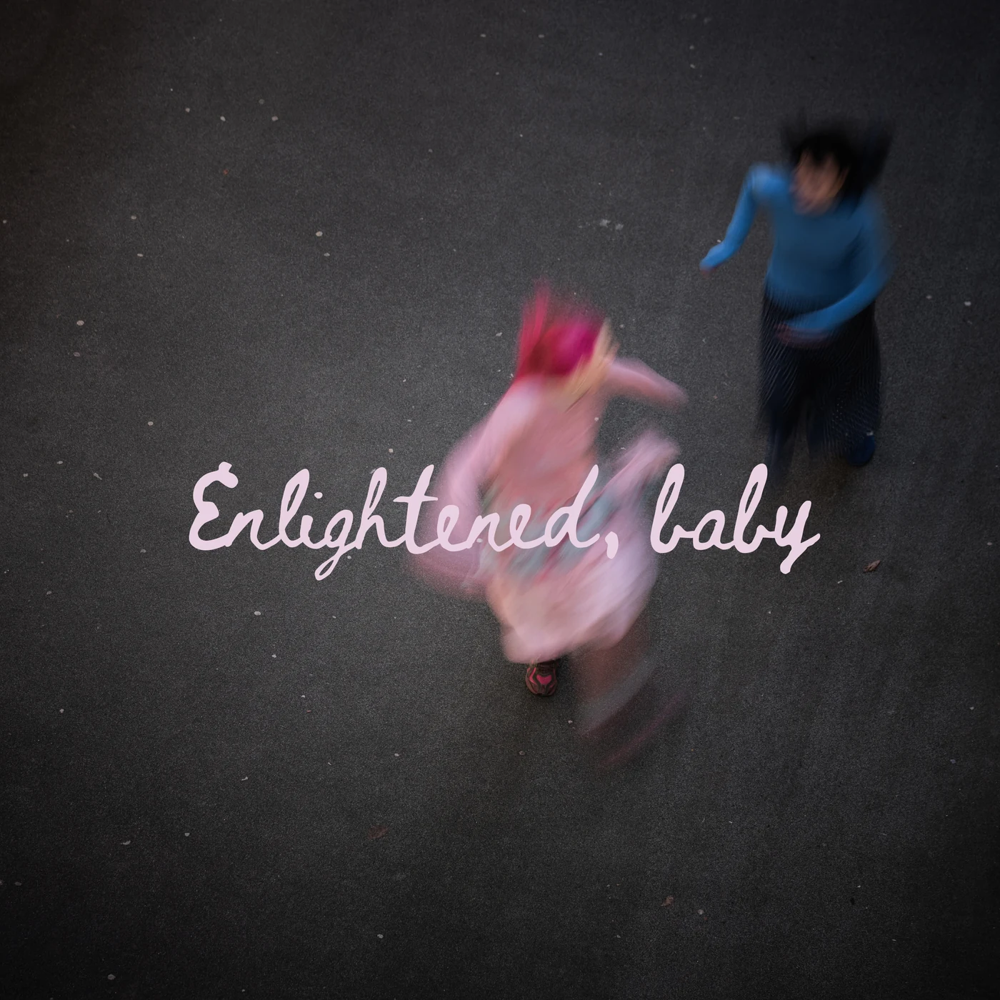
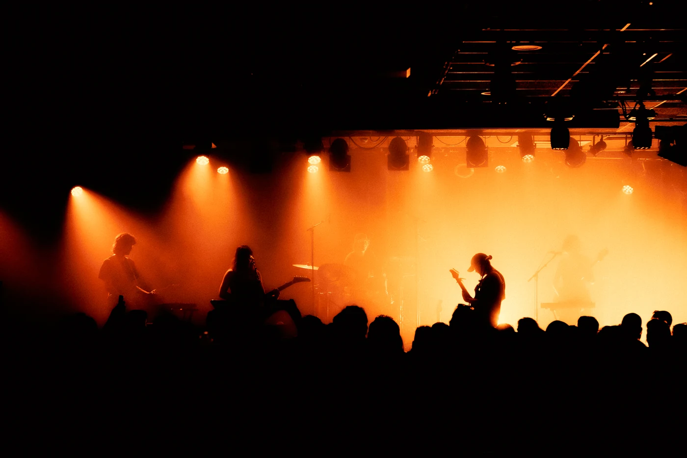
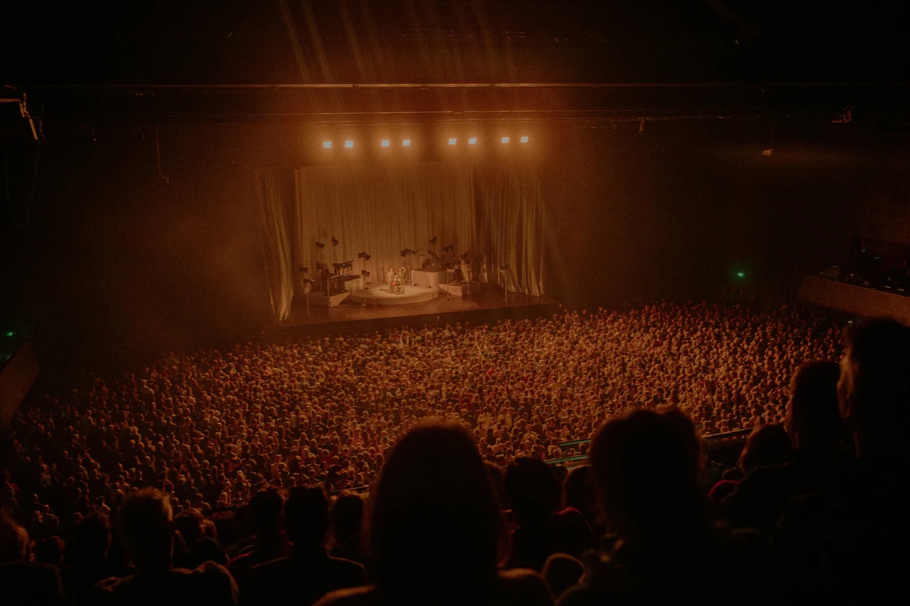
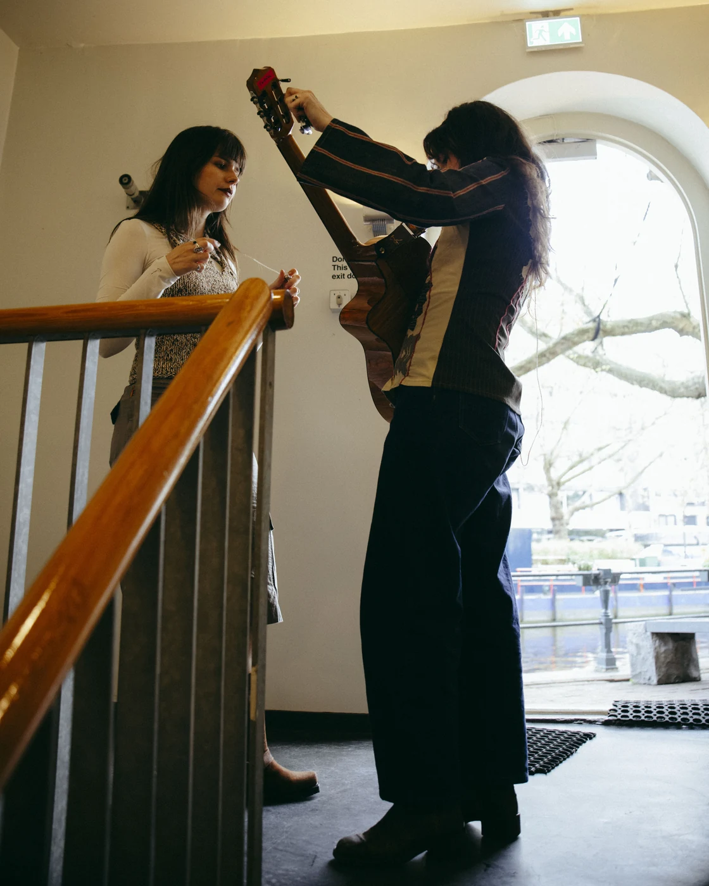
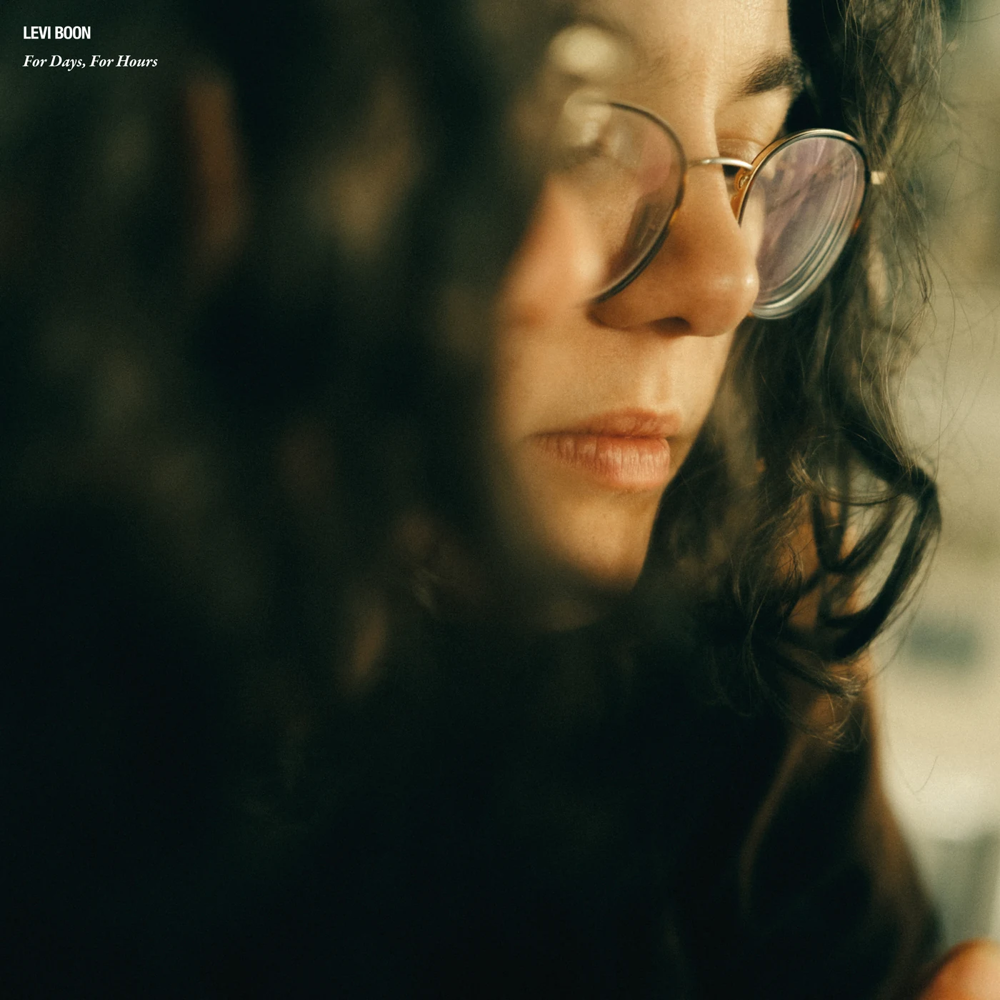
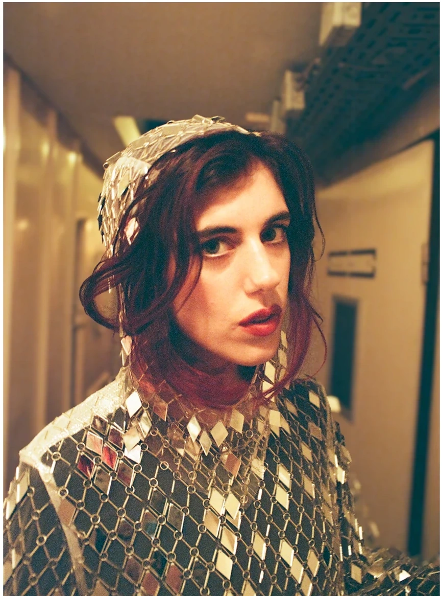
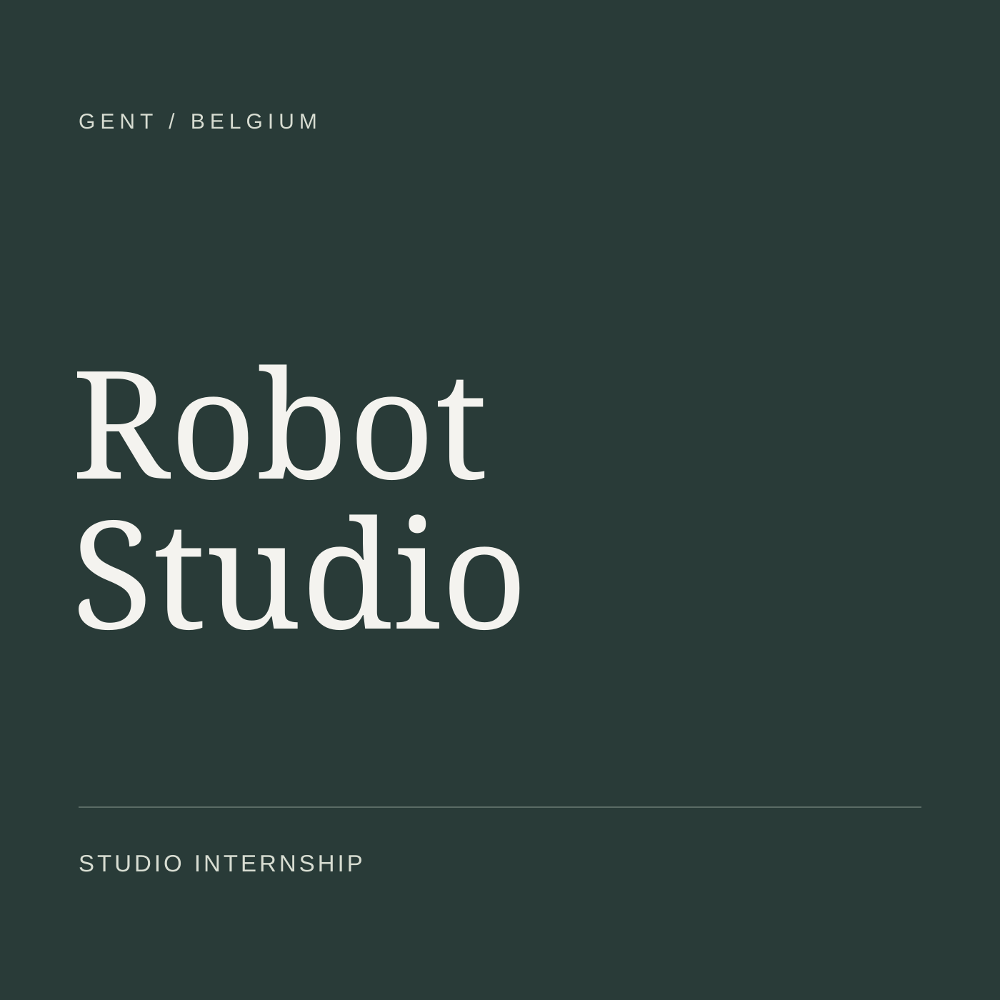
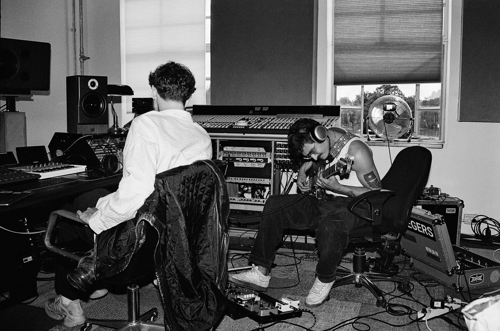

Luc Siegers
Producer, recording and mixing engineer.
Contact me
or
Amsterdam52.3676° N, 4.9041° E
New York40.7128° N, 74.0060° W

Producer, recording and mixing engineer.
The best music I’ve been a part of came from the moments we chose to embrace a mistake, or chose weird over comfortable.
For the better part of a decade I’ve toured with artists, worked in the studio and written songs with talented people, always trying to figure out what makes someone tick, and what makes their outlook on music truly singular.
It’s all the same job. I’m an actor of the invisible, an orchestrator of blooming ideas, helping a vision take form.








